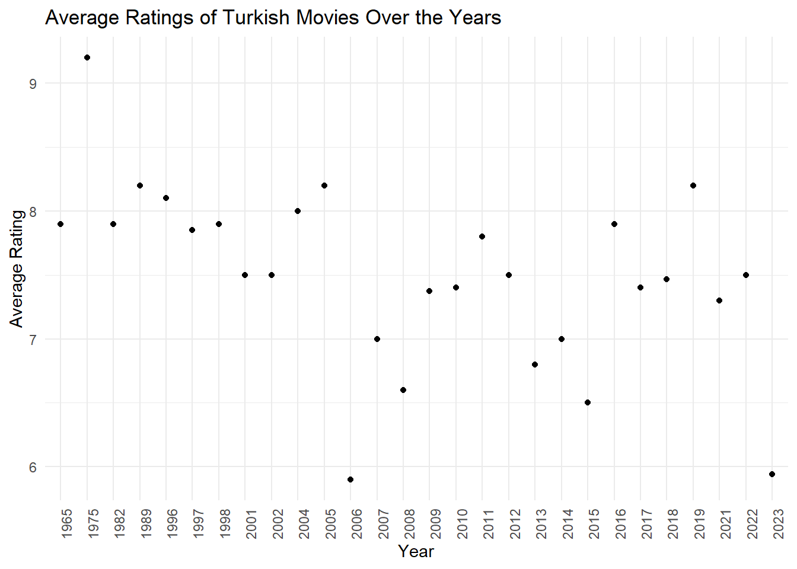
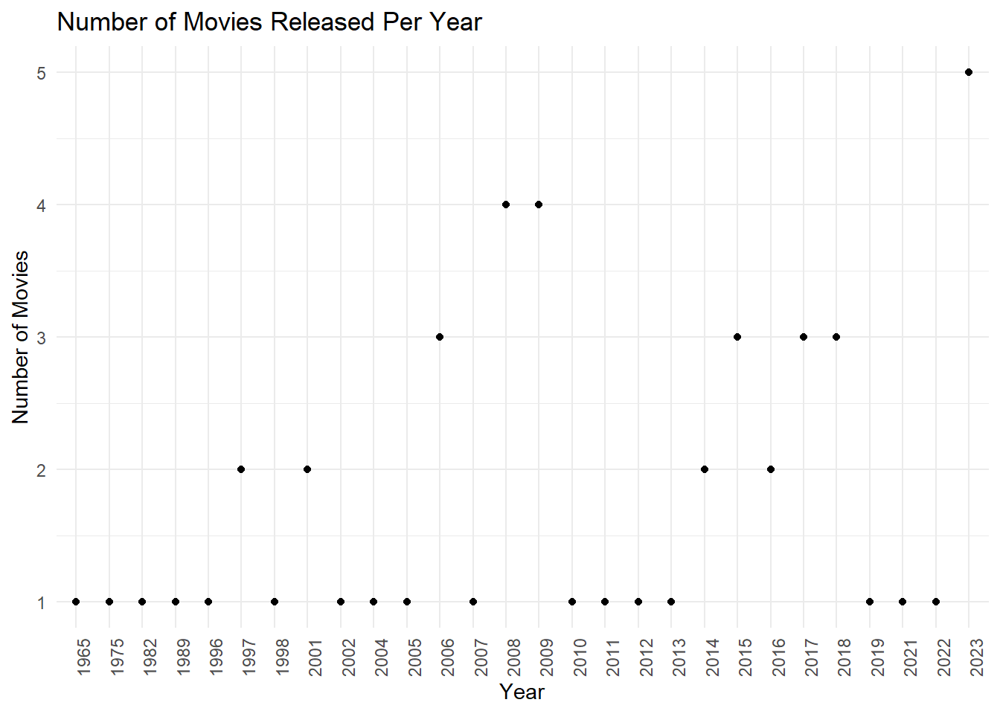
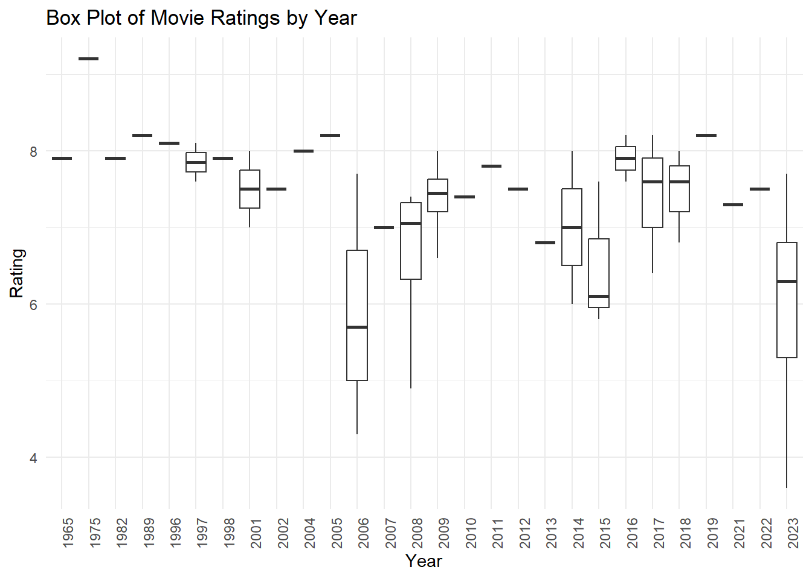
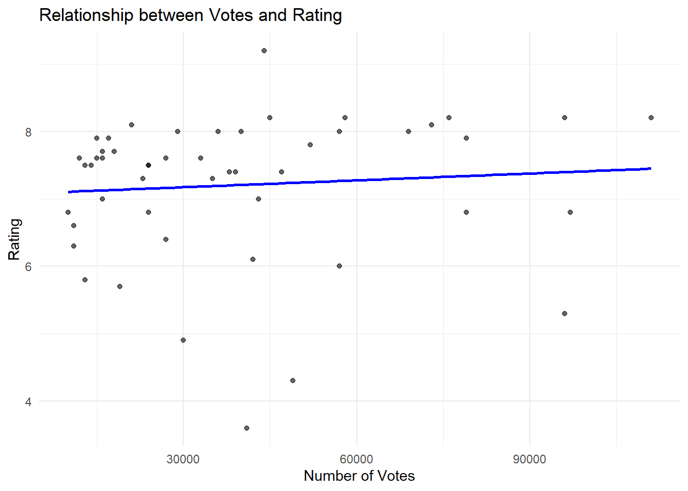

Title Year Duration Rating Votes Rank
1 23. A.R.O.G 2008 127 7.4 47000 30
2 24. Yahsi Bati 2009 112 7.4 39000 31
#Grafikler ve analizler
Show code
library(dplyr)library(ggplot2)# Group by 'Year' and calculate average rating for each yearyearly_rating_avg <- movie_data %>%group_by(Year) %>%summarise(Average_Rating =mean(as.numeric(Rating), na.rm =TRUE),Num_Movies =n())# Plot 1: Scatter plot of average ratings per yearggplot(yearly_rating_avg, aes(x = Year, y = Average_Rating)) +geom_point() +labs(title ="Average Ratings of Turkish Movies Over the Years",x ="Year", y ="Average Rating") +theme_minimal() +theme(axis.text.x =element_text(angle =90, hjust =1))

Show code
# Plot 2: Number of Movies Released per Yearggplot(yearly_rating_avg, aes(x = Year, y = Num_Movies)) +geom_point() +labs(title ="Number of Movies Released Per Year",x ="Year", y ="Number of Movies") +theme_minimal() +scale_x_discrete(breaks =as.character(seq(min(yearly_rating_avg$Year), max(yearly_rating_avg$Year), by =1))) +# Yıllar arası boşluğu artırıyoruztheme(axis.text.x =element_text(angle =90, hjust =1))

Show code
# Box plot of ratings per yearggplot(movie_data, aes(x =as.factor(Year), y =as.numeric(Rating))) +geom_boxplot() +labs(title ="Box Plot of Movie Ratings by Year",x ="Year", y ="Rating") +theme_minimal() +theme(axis.text.x =element_text(angle =90, hjust =1))

Show code
library(ggplot2)library(dplyr)# First, make sure Votes and Rating are numericmovie_data$Votes <-as.numeric(movie_data$Votes)movie_data$Rating <-as.numeric(movie_data$Rating)# Remove any rows with NA values for 'Votes' or 'Rating'movie_data_clean <- movie_data %>%filter(!is.na(Votes) &!is.na(Rating))# Calculate correlation between Votes and Ratingcorrelation <-cor(movie_data_clean$Votes, movie_data_clean$Rating)# Print the correlation coefficientprint(paste("Correlation between Votes and Rating:", round(correlation, 2)))
[1] "Correlation between Votes and Rating: 0.08"
Show code
# Plotting the relationship between Votes and Ratingggplot(movie_data_clean, aes(x = Votes, y = Rating)) +geom_point(alpha =0.6) +labs(title ="Relationship between Votes and Rating",x ="Number of Votes", y ="Rating") +geom_smooth(method ="lm", se =FALSE, color ="blue") +# Linear trend linetheme_minimal()
`geom_smooth()` using formula = 'y ~ x'

Show code
# Clean the movie data (ensure 'Rating' and 'Duration' are numeric)movie_data_clean <- movie_data %>%filter(!is.na(Rating) &!is.na(Duration))# Calculate the correlationcorrelation <-cor(movie_data_clean$Duration, movie_data_clean$Rating)# Print the correlation coefficientprint(paste("Correlation between Duration and Rating:", round(correlation, 2)))
[1] "Correlation between Duration and Rating: 0.23"
Show code
# Plotting the relationship between Duration and Ratingggplot(movie_data_clean, aes(x = Duration, y = Rating)) +geom_point(alpha =0.6) +# Scatter plot of pointsgeom_smooth(method ="lm", se =FALSE, color ="blue") +# Add linear regression linelabs(title ="Relationship between Movie Duration and Rating",x ="Duration (Minutes)", y ="Rating") +theme_minimal()